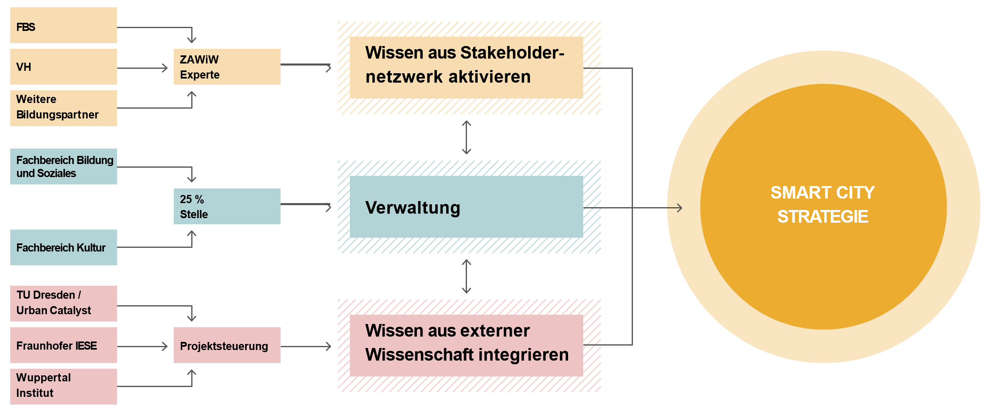
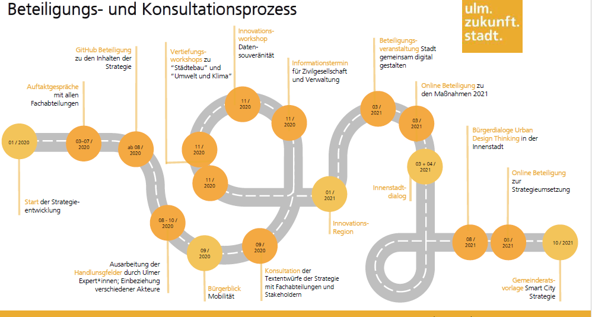
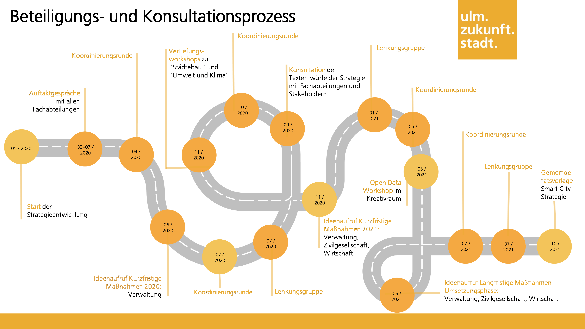

Strategieprozess und Vorgehen: Wie die Strategie entstand¶
Als eine von drei Großstädten aus der ersten Förderstaffel beschreitet die Stadt Ulm neue Wege, um Digitalisierung und Stadtentwicklung gemeinsam neu zu denken. Die Strategie soll richtungsweisend sein und eine Vorbildwirkung für andere Kommunen haben. Deshalb beschreibt Kapitel 3 die wichtigsten Aspekte im Strategieentstehungsprozess. Zum Einstieg werden die Kernaspekte des Ulmer Vorgehens herausgearbeitet. Nachfolgend werden in Unterkapitel 3.2 und 3.3 die zwei zentralsten Themen neben der Erstellung der Strategie selbst thematisiert: Der Ablauf der Beteiligung der Stadtgesellschaft sowie die Auswahl geeigneter kurzfristiger und langfristiger Maßnahmen als Grundlage der Umsetzungsphase.
3.1. Ablauf gesamter Strategieprozess / Prozess und Methodik¶
Die Verwaltung der Stadt Ulm kann auf eine Vielzahl von Erfahrungen und Erkenntnissen im Bereich digitaler Projekte aufbauen. Insbesondere die Digitale Agenda hat sich in den letzten Jahren ein breites Wissen im Bereich der digitalen Stadtentwicklung angeeignet. Dies umfasst nicht nur den Umgang mit digitalen Lösungen und Services, sondern insbesondere auch die Einbindung der Stadtgesellschaft, den Kulturwandel in der Verwaltung, die Nutzerzentrierung und vieles mehr. Dementsprechend ist der Prozess der Strategieerstellung gerade auch als Sammlung, Verstetigung und Verankerung dieser Erfahrungen zu sehen. Die Digitale Agenda orchestriert gemeinsam mit City & Bits als Programmbegleitung den Prozess, bringt das eigene Wissen ein und bündelt an den richtigen Stellen die Erfahrungen und Expertise der gesamten Akteurslandschaft.
Dabei gibt der Ulmer Weg vor, dass die Smart City nicht technologiegetrieben betrachtet wird. Stattdessen soll die Technologie im Sinne der Smart City Charta und für eine nachhaltige Stadtentwicklung und Nachhaltigkeit eingesetzt werden. Der zu Beginn beschriebene Fünfklang als Teil des Ulmer Nährbodens wird dabei eng in den Entstehungs- und Entwicklungsprozess eingebunden. Ulmisch bedeutet also auch Transparenz und Teilhabe.
Die Smart City Strategie muss dabei im richtigen Kontext und damit auch im Verhältnis zu anderen Strategien und Konzepten gesehen werden. Sie ist nicht alleinstehend, sondern bündelt als Querschnittsstrategie das Thema der Digitalen Transformation. Dabei fokussiert sie keine Lösungen, sondern nimmt analog zum Verständnis der Digitalen Stadtentwicklung immer wieder Bezug zu analogen Herausforderungen und Bedürfnissen sowie politischen und strategischen Zielen in der Stadt. In Zukunft wird es eine wichtige Aufgabe sein, andere Strategien bzw. Konzepte im Konzern Stadt und der Region sowie die Smart City Strategie der Stadt Ulm untereinander abzustimmen. Dabei wurden auch schon im Strategieentstehungsprozess zahlreiche andere Konzepte und Strategien aus der Stadt und der Region integriert wie beispielsweise das vorhandene ISEK, das Mobilitätskonzept oder die Roadmap Digitale Verwaltung. Zusätzlich leiten sich aus der Smart City Strategie auch Standards und Konzepte ab, wie beispielsweise Vorgaben im Bereich Open Data oder auch das Datenethikkonzept. Grundlage für die Erarbeitung der Smart City Strategie war eine umfassende Analyse nationaler und internationaler Smart City-Strategien. Dabei ist deutlich geworden, dass bestehende Strategien sehr technologiegetrieben ausgestaltet sind. Oftmals stehen technische Lösungen im Mittelpunkt und es fehlen klare Bezüge zum Thema Stadtentwicklung und Nachhaltigkeit. Genauso ist eine fehlende echte und breite Einbindung der Stadtgesellschaft festzustellen. Mit Blick auf die Handlungsfelder stehen diese in vielen Strategien eher als Silos nebeneinander, ohne die notwendigen und bestehenden Verknüpfungen. Die Digitale Agenda hat es sich auf Basis dieser Analyse und mit Blick auf die Vision, Werte und Ziele zur Aufgabe gemacht, die vorliegende Strategie grundlegend anders zu gestalten. So ist eine bürgerorientierte und integrierte Smart City Strategie entstanden, welche gemäß den Leitlinien und Zielen der Smart City Charta (siehe Kapitel 4.3) die Digitale Transformation als ganzheitlichen Prozess begreift.
Das Aufbrechen des Silo-Denkens wird auch bei der Erarbeitung der Handlungsfelder sichtbar. Dafür nutzt die Stadt Ulm das sogenannte Twinning-Modell. So gibt es für jedes Handlungsfeld ein Tandem aus dem Projektteam Ulm4CleverCity und einer Expertin oder einem Experten des jeweiligen Gebiets. Die Tandems fungieren als Multiplikator*innen und beziehen jeweils die relevanten Stakeholder im Schreibprozess mit ein. Beispielsweise konnte das Zentrum für Allgemeine Wissenschaftliche Weiterbildung (ZAWIW) für die Themen Bildung und Kultur und Gesundheit gewonnen werden. Mitarbeitende des ZAWIW haben so als Handlungsfeldverantwortliche ihr Netzwerk genutzt, um eine möglichst breite Sicht auf die Themenblöcke einzuholen und haben auf dieser Grundlage einen ersten Strategieentwurf für das Handlungsfeld verfasst.

Im Strategieprozess hervorzuheben ist insbesondere auch die Einbindung der Wissenschaft. Lokale Vertreter:innen wurden an vielen Stellen in die Erarbeitung der Strategie eingebunden. Sowohl bei den Handlungsfeldern als auch in zahlreichen Workshops und darüber hinaus konnten sie Ihre Kompetenzen und Fähigkeiten in den Prozess einbringen. Begleitend waren über den Fachbeirat Wissenschaftler*innen aus Ulm bzw. ganz Deutschland eingebunden. Diese haben beratend unterstützt und sowohl punktuell als auch bei den jeweiligen Fachbeiratstreffen ihre Expertise und Erfahrung einfließen lassen. Insbesondere auch bei der Planung und Bewertung der Maßnahmen wurden sie zur Rate gezogen. Eine weitere Ulmer Besonderheit ist vor allem die Einbindung von insgesamt drei wissenschaftlichen Partnern: TU Dresden / Urban Catalyst im Bereich Stadtentwicklung und -planung, das Wuppertal Institut im Bereich Nachhaltigkeit und Kreislaufwirtschaft sowie das Fraunhofer IESE im Bereich digitaler Ansätze und Lösungen für den ländlichen Raum.
TU Dresden / Urban Catalyst hat mit Blick auf das Strategiedokument die in Kapitel 5 enthaltenen Zielbilder erarbeitet und die Quartiersanalyse geliefert. Zusätzlich gab es umfangreiche Zuarbeiten zu den Handlungsfeldern aus Kapitel 6. Mit Blick auf die Maßnahmenerarbeitung wurde zu Beginn der Strategiephase außerdem eine umfassende Good-Practice-Analyse erarbeitet. Fraunhofer IESE hat mit der Entwicklung der Personas dazu beigetragen, die nutzerzentrierte Entwicklung der Smart City in den Mittelpunkt zu stellen. Diese sind zwar nicht Teil des Strategiedokuments, dienen aber als große Hilfe im Umsetzungsprozess, auch mit Blick auf die Maßnahmen. Zusätzlich hat IESE einen wichtigen Baustein im organisatorischen Grundlagenkapitel geliefert im Themenbereich der Einbindung der Region und des Wissenstransfers.
Das Wuppertal Institut hat entscheidende Inputs zu den Handlungsfeldern geliefert und außerdem einen Leistungsbaustein im Bereich der Kennzahlen erarbeitet. Insbesondere die praktischen Erfahrungen an der Schnittstelle zwischen Nachhaltigkeit und Klimaschutz sowie der praxisnahen Bewertung von Projekten haben eine gute Ausarbeitung des Monitorings und der Evaluation ermöglicht.
Partizipation für die Strategieerarbeitung¶
Im Rahmen des bürgerorientierten Ansatzes der vorliegenden Strategie stellt die frühzeitige Einbindung unterschiedlicher Akteurs- und Zielgruppen einen zentralen Aspekt der Strategieerarbeitung dar. Grundlage zur Identifikation und Einbindung der relevanten Stakeholder war eine umfassende Stakeholderanalyse. Innerhalb dieser wurden die Stakeholder mittels eines Stakeholder-Mappings entsprechend Ihrer Position, Kompetenzen, Rollen etc. eingeordnet. Um eine zielgruppengerechte Partizipation zu ermöglichen, erfolgte ein umfassender Beteiligungs- und Konsultationsprozess auf Basis hybrider Formate, um sowohl digital affine Akteure als auch Nonliner zu erreichen. Der Prozess verfolgte dabei die Zielsetzung, möglichst viele Akteure und Stakeholder mit unterschiedlichen Methoden an verschiedenen Orten in die Strategieerstellung zu integrieren.
Ausgangspunkt des Beteiligungs- und Konsultationsprozesses stellen mehrere Auftaktgespräche mit allen Fachabteilungen der Ulmer Stadtverwaltung sowie die Bereitstellung von Inhalten der Strategie auf GitHub dar. Auf dieser Basis wurden insbesondere auch bei der Ausarbeitung der Handlungsfelder durch Ulmer Expert*innen verschiedene Akteure über eine Beteiligungsplattform einbezogen. Hierbei wurden die Fachabteilungen der Ulmer Stadtverwaltung sowie weitere Stakeholder in einem Konsultationsverfahren ebenfalls explizit in die Ausarbeitung der Handlungsfelder integriert.
Im Zuge des transparenten Ansatzes der Strategie wurden anschließend zahlreiche Informationsformate eingerichtet, um auch die Öffentlichkeit regelmäßig über den Strategieerstellungsprozess zu informieren. Dabei muss insbesondere auf den Informationstermin für die Zivilgesellschaft sowie die Verwaltung, einen Innovationsworkshop zum Thema Datensouveränität und einen Vertiefungsworkshop zu den Thematiken Städtebau sowie Umwelt und Klima verwiesen werden. Darüber hinaus wurden mehrere Berichte und Artikel in unterschiedlichen Zeitungen und Zeitschriften sowie eine Podcastserie veröffentlicht und eine Postwurfsendung eingerichtet. Genauso wurden Dialogformate sowohl online über zukunftsstadt-ulm.de als auch offline im M25 zur Projektvorstellung und Beteiligung aufgebaut.
Dieses Informations- und Partizipationsangebot wurde mit der Beteiligungsveranstaltung „Stadt gemeinsam digital gestalten“ und einer Onlinebeteiligung zu den Maßnahmen 2021 auch im fortschreitenden Prozess mit unterschiedlichen Beteiligungsformaten aufrechterhalten. Im Zuge der Vorbereitung der Umsetzungsphase wurden im Bürgerdialog mit der Methodik des Urban Design Thinking in der Ulmer Innenstadt sowie einer begleitenden Onlinebeteiligung verschiedene Akteure und Stakeholder, insbesondere die Bürgerschaft, zur zielgruppenorientierten Beteiligung eingeladen. Dieser umfangreiche Beteiligungs- und Konsultationsprozess kann ebenfalls der nachfolgenden Grafik entnommen werden. Dabei wird die wichtige Rolle unterschiedlicher Akteure und Stakeholder im Zuge der Strategieerstellung besonders deutlich.

Selbstverständlich beruht die Smart City Strategie auch auf breiter Einbindung der Akteure aus der Stadtverwaltung und dem gesamten Konzern Stadt. Auftaktgespräche mit allen Fachabteilungen dienten zur Festlegung des strategischen Rahmens sowie der Identifikation relevanter Ausgangslagen und Zielsetzungen. Auf diese Weise konnten die Fachabteilungen schon früh einen großen Einfluss auf die entstehende Strategie nehmen. Darüber hinaus wurden sie über regelmäßig stattfindende Koordinierungsrunden und Lenkungsgruppen sowohl während des Strategieprozesses mitgenommen als auch in die inhaltliche Ausführung der Strategie eingebunden. Besonders zeigt sich diese Einflussnahme im bereits dargestellten Erstellungsprozess der elementaren Handlungsfelder. Darüber hinaus fanden zahlreiche Informations- und Austauschformate statt wie Vertiefungsworkshops zu einzelnen Handlungsfeldern, Weiterbildungsangebote, beispielsweise im Kreativraum, ein Open Data Workshop und vieles mehr.

3.3. Vorbereitung und Auswahl der langfristigen Umsetzungsmaßnahmen¶
Kurzfristige Maßnahmen als Vorbereitung
Bereits während der Strategiephase beschäftigt sich die Stadt Ulm mit Maßnahmen, die im Rahmen der Smart City relevant sind und zu Ulm passen. Um neben den Fachabteilungen der Verwaltung auch die gesamte Stakeholderlandschaft im Sinne des Fünfklangs mit in den Prozess zu integrieren und für die Umsetzungsphase fit zu machen, werden sowohl 2020 als auch 2021 kleinere kurzfristige Maßnahmen umgesetzt.
Diese kurzfristigen Maßnahmen sind aus zwei Ideenwettbewerben 2020 und 2021 entstanden, um Erfahrungen für die Auswahl langfristiger Maßnahmen zu sammeln. Dafür wurde ein Steckbrief zur Einreichung der Idee sowie ein Scoring (vgl. Abschnitt zum Scoring der langfristigen Maßnahmen) entwickelt. Für die Auswahl langfristiger Maßnahmen wurden diese verfeinert und optimiert. Teilnehmen konnten alle Fachabteilungen, der Stadtkonzern und städtische Akteure wie Zivilgesellschaften, Vereine und Unternehmen.
Langfristige Maßnahmen
Die langfristigen Maßnahmen sollen innovativ und modellhaft sein, zu den Ulmer Werten passen und den Zielgruppen einen echten Mehrwert bieten. Dazu zählt auch, dass sie die in der Strategie dargestellten Herausforderungen der Stadt Ulm lösen und zur Erreichung der gesteckten Ziele beitragen. Darüber hinaus hat die KfW Kriterien formuliert, welche im Rahmen des Förderprojekts beachtet werden müssen. Um solche Ideen einzureichen, standen den Interessierten aus Stadtverwaltung, Stadtkonzern, Vereinen, Verbänden, Initiativen, Unternehmen und Hochschulen grundsätzlich zwei Wege offen.
Die erste Möglichkeit war, frühe Ideen und Vorschläge mit einem verkürzten Steckbrief einzureichen. Dieser beinhaltet nur die wesentlichen Aspekte einer Idee wie Titel, Beschreibung, Zielgruppe und Nutzen. Diese Ideen konnten jedoch nicht für eine Förderung berücksichtigt werden. Sie wurden gesammelt und stehen den Fachabteilungen zur Verfügung. Diese haben damit die Möglichkeit, für spannende und passende Ideen weitere Finanzierungsquellen zu identifizieren oder sie für eine Umsetzung im städtischen Haushalt einzuplanen. Konkrete Umsetzungsmaßnahmen für die Phase 2 des Förderprojekts konnten über einen detaillierten Maßnahmensteckbrief eingereicht werden. Dieser beinhaltet weitere Fragen zu Betreiberschaft, Kosten und Finanzierung, Markterkundungen, Lösung von in der Strategie skizzierten Herausforderungen der Stadt und verlangt einen Projekt- und Meilensteinplan, um die Einhaltung des Zeitplans (Umsetzung bis 2026 abgeschlossen) zu verifizieren.
Die konkreten Umsetzungsmaßnahmen wurden nach Abschluss des Ideenwettbewerbs in einem detaillierten Scoring bewertet. Dazu wurde auch punktuell die Expertise des Fachbeirats hinzugezogen. Von besonderer Bedeutung ist dabei, dass die Maßnahmen zur Lösung der in der Strategie skizzierten Herausforderungen beitragen und die Ziele der Handlungsfelder adressieren. Neben Basiskriterien (Ausschlusskriterien) wurde deshalb nach dem Bezug zur Strategie (Ziele, Werte, Zukunftsaufgaben, Handlungsfelder), qualitativen Kriterien (angelehnt unter anderem an die Ulmer Werte, Vision und Ziele) und Vorgaben der KfW sowie nach quantitativen Kriterien (Wirkungsabschätzung) bewertet. Maßnahmen, die im Scoring ausgeschlossen werden mussten, wurden dem Ideenpool beigefügt. Das Ergebnis des Scorings, also die Vorauswahl der Maßnahmen, wurde im Rahmen der Koordinierungsrunde und Lenkungsgruppe beschlossen und die vorgeschlagenen Maßnahmen zur Umsetzung festgelegt. Letztendlich entschied der Gemeinderat am 13. Oktober 2021 final über die Auswahl und Umsetzung der Maßnahmen.